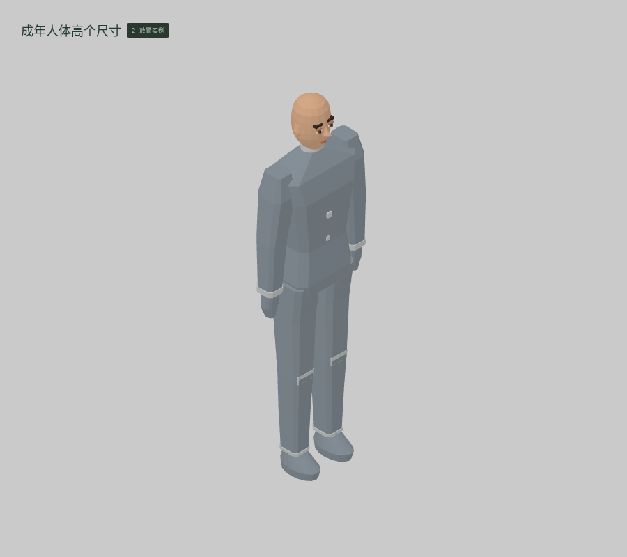
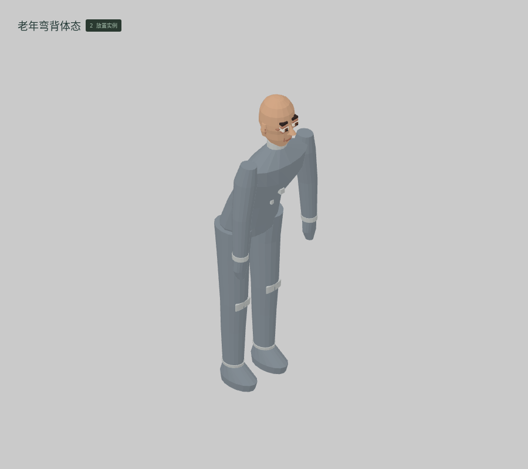
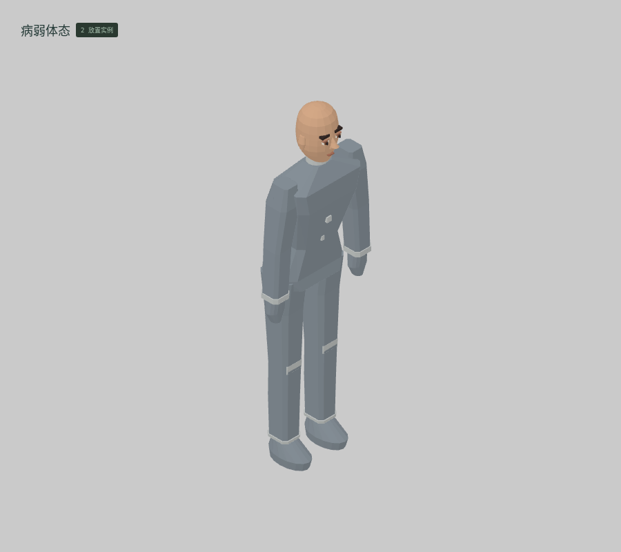
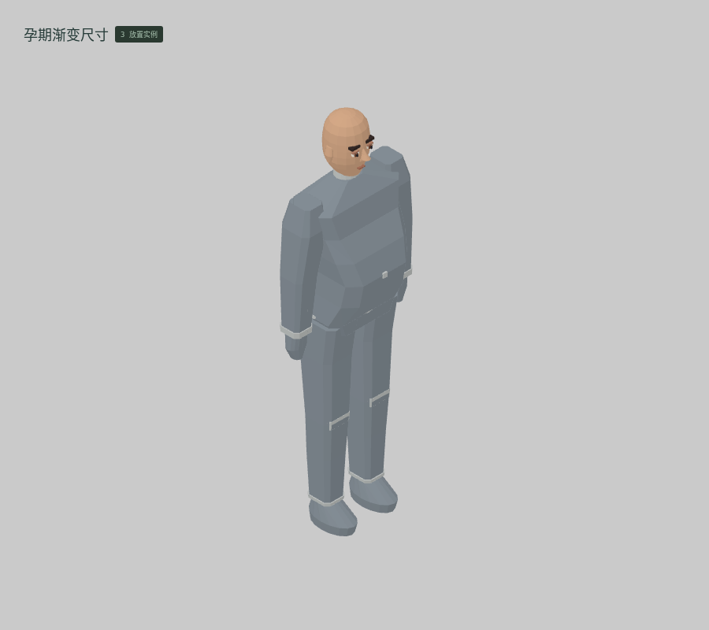
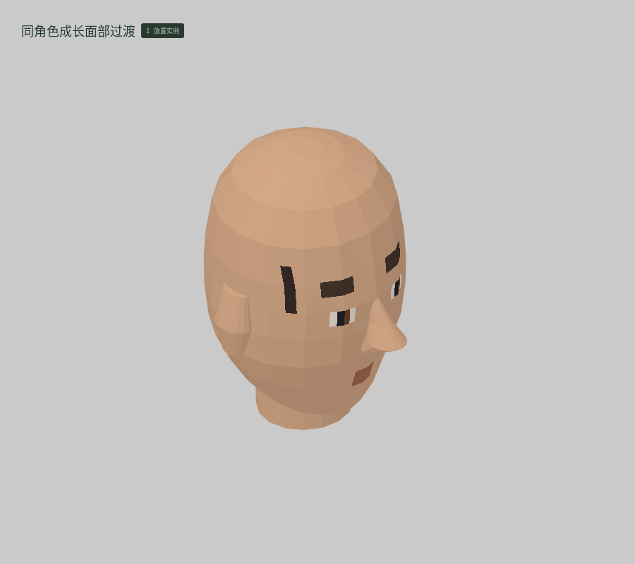
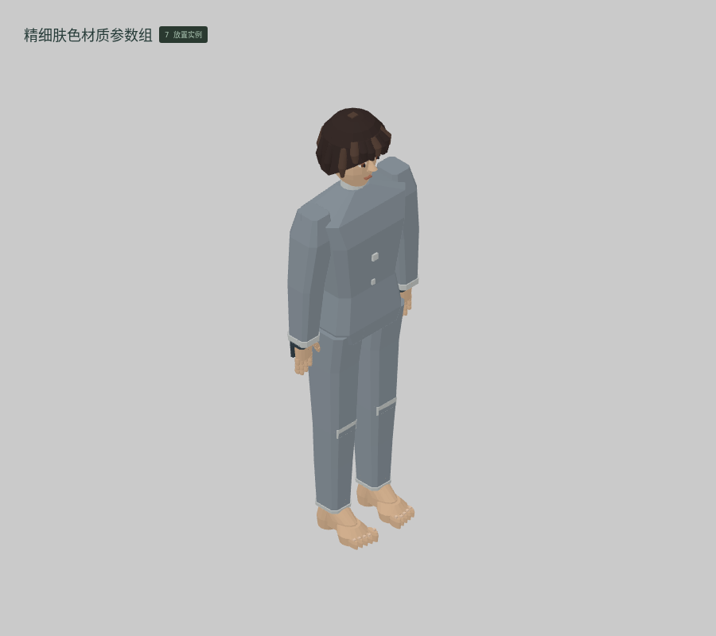

<!doctype html><meta charset="utf-8"><style>*{box-sizing:border-box}body{margin:0;background:#dfe1dd;color:#273d34;font:18px system-ui,'PingFang SC'}header{padding:26px 36px}h1{font-size:30px;margin:0 0 10px}main{display:grid;grid-template-columns:repeat(4,1fr)}figure{margin:0;border:1px solid #b7c0b6;background:#d4d8d1}img{display:block;width:100%}figcaption{padding:13px 22px 18px;font-size:19px}small{display:block;font-size:13px;margin-top:5px}footer{padding:24px 36px}</style><header><h1>云山 · M065 · 参数变体 · 6 件三维候选</h1>真实编辑器截图 · 基础块件与连续网格 · 不使用 AO / 辉光</header><main><figure><figcaption><b>CHAR-079 成年人体高个尺寸</b><small>母版参数变体 · 2 实例 · 398 体素格 · 实际边界 0.59 × 1.88 × 0.25 m</small></figcaption></figure><figure><figcaption><b>CHAR-080 老年弯背体态</b><small>母版参数变体 · 2 实例 · 641 体素格 · 实际边界 0.51 × 1.59 × 0.40 m</small></figcaption></figure><figure><figcaption><b>CHAR-081 病弱体态</b><small>母版参数变体 · 2 实例 · 398 体素格 · 实际边界 0.55 × 1.68 × 0.31 m</small></figcaption></figure><figure><figcaption><b>CHAR-082 孕期渐变尺寸</b><small>母版参数变体 · 3 实例 · 326 体素格 · 实际边界 0.59 × 1.70 × 0.31 m</small></figcaption></figure><figure><figcaption><b>CHAR-083 同角色成长面部过渡</b><small>母版参数变体 · 1 实例 · 16 体素格 · 实际边界 0.20 × 0.26 × 0.20 m</small></figcaption></figure><figure><figcaption><b>CHAR-084 精细肤色材质参数组</b><small>母版参数变体 · 7 实例 · 656 体素格 · 实际边界 0.59 × 1.73 × 0.32 m</small></figcaption></figure></main><footer>每格独立适配画幅，各模板不共用同一比例尺。几何候选，尚未通过人工美术验收。原生体素与连续网格分别保存和导出。</footer>